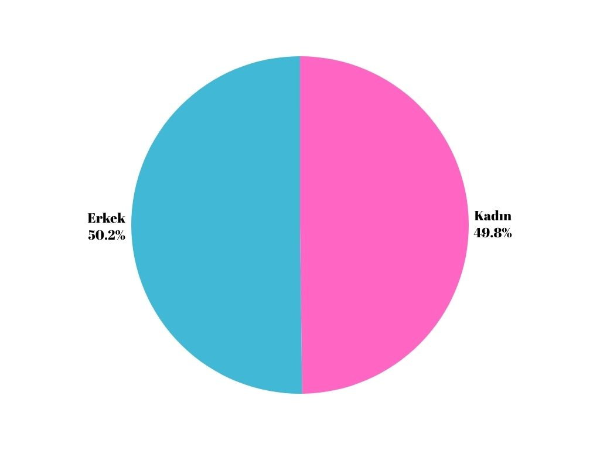

İnsanlar, Yerler ve Çevreler
Yerleşmeyi Etkileyen Doğal Faktörler
- İklim Özellikleri
- Yer Şekilleri
- Bitki Örtüsü
- Yer Altı Kaynakları
- Su Kaynakları
Yerleşmeyi Etkileyen Beşeri Faktörler
- Tarım
- Sanayi
- Ticaret
- Turizim
- Ulaşım
- Madencilik
- Hayvancılık
- Sosyal ve Kültürel Etkenler
Nüfus Sayımı
Türk tarihinde ilk nüfus sayımı 1831 yılında Osmanlı padişahı 2. Mahmut tarafından yapılmıştır. Cumhuriyet tarihinde ise ilk nüfus sayımı 1927 yılında yapılmıştır.
2007 yılından itibaren ülkemizde ADNKS sayesinde nüfusumuzun özellikleri T.C. kimlik numarası sayesinde elektronik ortamda görüntülenebilir.
Ülkemizde Nüfus Sayımını TÜİK Yapmaktadır!
Nüfus Sayımının Amaçları
- Ülkede Yaşayan Nüfus Sayısını Öğrenmek
- Ülkenin Nüfus Artış Hızını Öğrenmek
- Ülke İçindeki Nüfusun Dağılışını Öğrenmek
- Nüfus Yoğunluğunu Öğrenmek
- Nüfusun Yaş, Cinsiyet, Meslek Gibi Özelliklerini Belirlemek
- Eğitim, Sağlık Gibi Hizmet Sektörlerine ne kadar yatırım yapılması gerektiğini öğrenmek
Grafiklerle Türkiye
Cinsiyet Oranı (2018)

Nüfus Çalışma Sektörleri
Bir ülkenin piramit prafiği üçgen ise gelişmemiş, içe daralmışsa gelişmekte, arı kovanı şeklinde ise gelişmiş bir ülkedir.
Göç
Göçün Doğal Nedenleri
- Deprem
- Kuraklık
- Volkanik Olaylar
- Sel
- Heyelan
- Erozyon
Göçün Ekonomik Nedenleri
- İş Bulma
- Ticaret
- Turizm
- Tayin
Göçün Sosyal Nedenleri
- Din
- Miras
- Kan Davası
- Sağlık
- Türizm
- Eğitim
Göçün Siyasi Nedenleri
- Mübadele
- İşgaller
- Terör
- Savaş
Göç Çeşitleri
- Oluşum Nedenlerine Göre Göç
- Süresine Göre Göç
- Mesafesine Göre Göç
Ana Sayfa